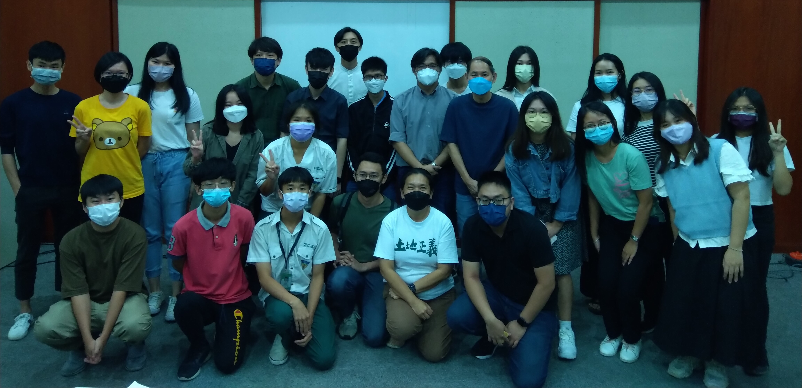
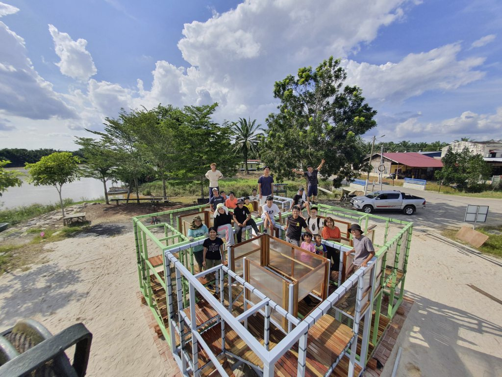
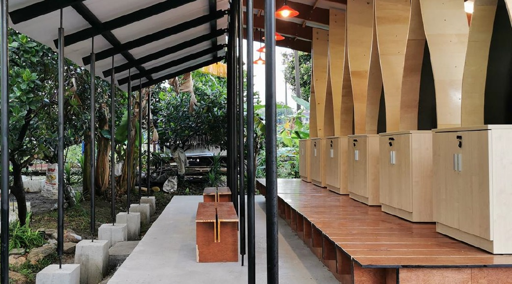

社造寻路从土地发声 回到社区凝聚共同体
工作坊学员与导师合影。社区营造就是把社会运动的理想落实到日常生活，解决各种社区问题，将进步价值转化为具体的社会变革。工欲善其事，必先利其器，有志从事社造者得学习寻找资源、发想提案、撰写计划乃至提案简报。
配合“从土地发声：2022大专青年社区参与企划”，董总会务与组织局于2022年8月13日在隆雪华堂举办“社区营造工作坊”，邀请环境教育工作者高佩瑶和助理景观建筑师林传扬，讲授社造的基础概念，让学员学习提案规划，撰写计划书，进而提升社区营造的实务知能。
高佩瑶首先开宗明义强调，着手企划前，必须了解其本质，走入社区，以社区为本，了解社区的人事物。一份企划案要有社区调查作铺垫，设定计划目的、目标对象，拟出重建社区认同等关键策略，最终产出扎实、可持续性且具创意的执行方案。目前为SustainableX永续社区协会主席的她，与其同仁组成“绿游人”团队，在2021年提出“永续乌鲁音”计划，结合回乡创业的雪兰莪州乌鲁音在地人，以永续经营、生态旅游的概念推广家乡特色，为永续旅游开创新方向。
她以“永续乌鲁音”为例，说明如何打造永续社区，箇中策略包括：
一、环境教育：借由社区走读，重新发现社区生态、记录文史故事，用环境教育来凝聚社区认同。
二、社区创生：通过“生产—消费—废弃”循环链，整合社区资源，塑造绿色品牌，建立在地友善农耕与传统产业的经济互助网络，促成社区参与创生、共享经济。
三、生态旅游：以自然资源推展生态旅游，善用在地特色食材与产品、社区故事馆，推动文化旅游，带动当地经济。
文林望村的移动式游乐场。UCSI建筑与环境系师生多年来积极推动社区建设，其校友林传扬以柔佛州麻坡的文林望村（Kampung Belemang）的社区游乐场和雪兰莪州鹅唛的甘榜拿督克拉末（Kampung Datuk Keramat）的社区花园图书馆为例，叙述他们如何从互相学习和经验分享，激发参与热情，改造生活环境，凝聚社区共同体。
2020年杪，一批大学生和不同领域的专才进驻到文林望村成功结合村民，经历四个月打造出独一无二的移动式游乐场，颠覆了一般人对社区游乐场的想像。这座设在麻河旁的公共游乐场，不但是孩童的嬉戏场所，也是村民日常休憩据点，为老村镇注入新活力，吸引游子回乡探亲。同年，UCSI大学建筑系学生在甘榜拿督克拉末兴建社区图书馆，过程中与当地马来居民互动密切，成功打破邻里隔阂。图书馆完工后不仅让孩童受惠，也促进社区阅读风气，成为居民的活动空间。
甘榜拿督克拉末的社区花园图书馆。除了企划提案的基本功，两位主讲者都提倡社区营造不只是改造空间，也是创造多元、包容、尊重与相互理解的公共对话。从守护环境开始，从改革社会的淑世关怀出发，社区营造必须思索如何永续发展，透过文化创意产生经济价值，影响更多人参与，最终让众人一起合作共同完成目标。如此才有助于开拓视野，厚植公民素养，再回馈至社会实践，形成良性循环。
大专青年社区参与 八份企划提案晋级
由董总主办、隆雪华青协办的“从土地发声：2022年大专青年社区参与企划”，旨在为鼓励青年发挥创意投入社区发展，培养对在地的认同感。本企划主题类型多样，涵盖社区营造、文化保存、创意行销、田野调查、记录出版等。马大华文学会、国立大学华裔学生理事会、新纪元大学学院学生会、双威大学华文学会、泰莱大学华文学会、UCSI大学中华文化学会、建设大学华文学会为支持单位，星洲日报为合作媒体。
隆雪历史与文化遗产之友学会主席陈亚才、UCSI大学建筑与环境学院助理教授张集强、马来亚大学中文系高级讲师何启才、2014年“看见十八丁”社区艺术嘉年华总策划庄白祺受邀组成评审团。
本活动获得积极回响，接获参与者所提交的企划提案。经评选后，共有8份企划案入围。
“2022年大专青年社区参与企划”入围名单
| 序 | 团队名称 | 企划题目 |
|---|---|---|
| 1. | 培风中学公民与社会教育师生小组 | “一起懂街纳”——东街纳社区导览计划 |
| 2. | 新山梦之龙 | 把握新山历史的脉搏——体验华族文化的魅力 |
| 3. | 马六甲渔民与渔业田调小组 | 马六甲渔业田野调查与纪录 |
| 4. | 启航寻熠 | 双溪威新村社区改造计划 |
| 5. | 想象北方 | 山卡企案 |
| 6. | 冲锋陷阵队 | 走巴刹，带你认识加影人！ |
| 7. | Specky Studio | 教育游戏研究室 |
| 8. | “字”命不凡 | 近打谷石灰岩洞保育运动纪实（2019-2022） |
主办单位为成功晋级的队伍安排工作坊后，将于2022年9月24日举行汇报暨展览，现场公布决选名单和进行颁奖。获奖队伍需在2022年12月31日前，提交企划案的执行成果报告。